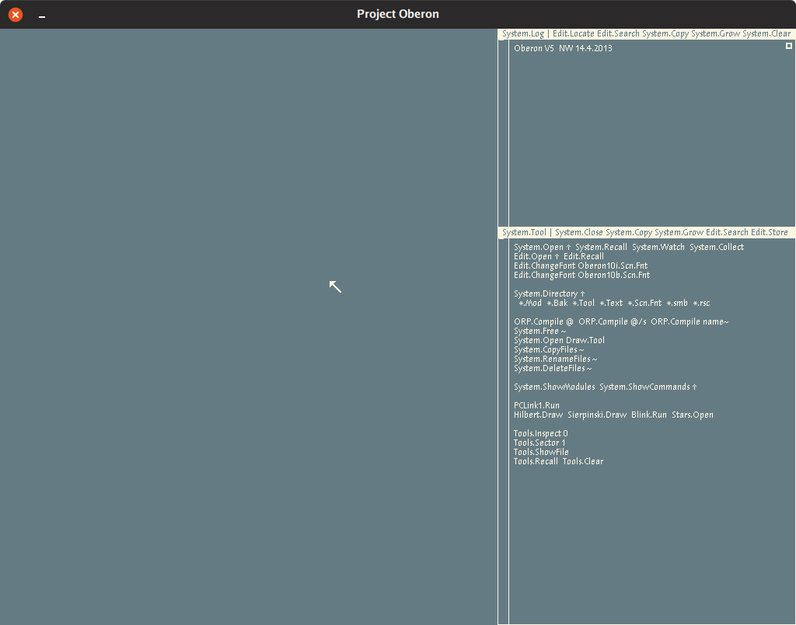
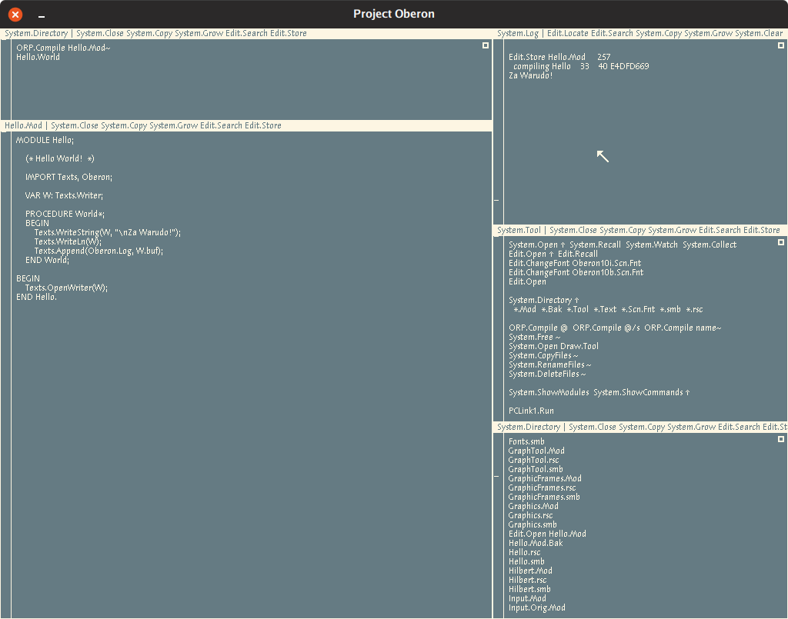
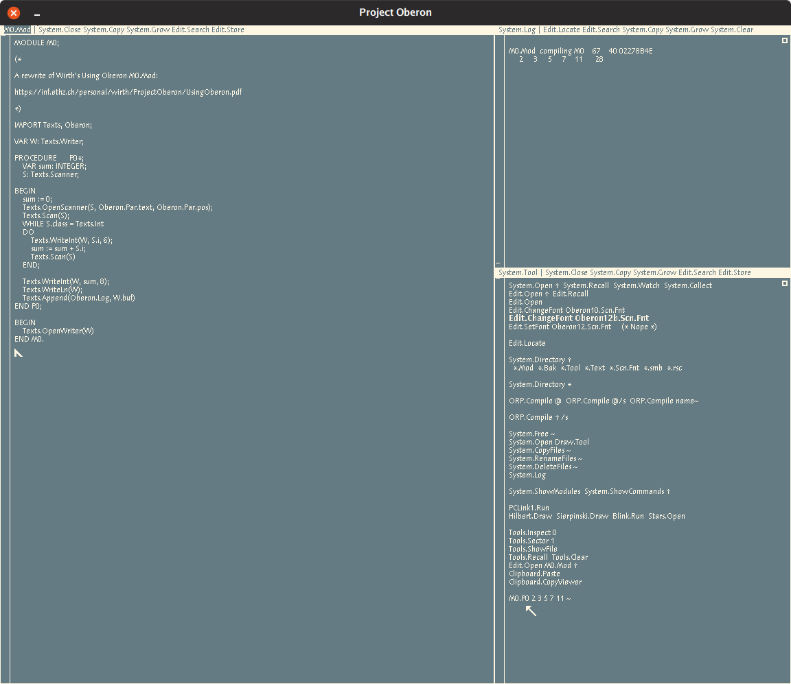

Playing with Oberon in 2019
Oberon is the name for an operating system and language pair written by Niklaus Wirth.
Oberon is notable for being simple and powerful in a manner which permits Oberon to be pleasant for use with education.
Refer to Wikipedia for some history and exposition: https://en.wikipedia.org/wiki/Oberon_(operating_system)
Getting Oberon
The easiest way to get Oberon up and running from unix is through pdewacht’s risc emu: https://github.com/pdewacht/oberon-risc-emu
You can also, from unix, use A2 Oberon Subsystem for Unix (aosunix). This can be acquired a few different ways, but the easiest way is probably via fld’s directory: http://www.informatik.uni-bremen.de/~fld/UnixAos/
If you do go this route, you’ll need to follow the Readme.txt and download a rev.*/{install.UnixA2, *-*bit.tgz} of your choice.
Disclaimer: At the time of writing I have not gotten Oberon proper to compile/run my own programs under Bluebottle. I can write under Bluebottle’s main desktop interface/programs just fine, but I want straight Oberon.
If you want the A2 sources at their root, you can clone the main sources tree via subversion:
svn checkout --user infsvn.anonymous https://svn-dept.inf.ethz.ch/svn/lecturers/a2/ # Password: anonymous
These can be browsed online via: https://svn-dept.inf.ethz.ch/svn/lecturers/a2/?username=infsvn.anonymous?password=anonymous
There’s also a community repository served via subversion:
svn checkout https://www.ocp.inf.ethz.ch/svn/ocp/
You can play with Oberon in the browser via: https://schierlm.github.io/OberonEmulator/emu-wasm.html?image=UnicodeDiskImageWithSource&width=1024&height=576
Using Oberon
For the purposes of this post I’ll be using pdewacht’s Oberon risc emu.
Note the presence of Clipboard.Paste and Clipboard.CopyViewer in this Oberon. This will be useful later.
Mouse
I’ll use the format of mb[1-3] to describe mouse buttons to press. A mouse with three buttons is recommended.
- mb1 is the left mouse button, used for placing the caret
- mb2 is the middle mouse button (or hover and press the Alt key), used for running commands
- mb3 is the right mouse button, used for selecting text
Commands
Commands are text in the form of Module.Procedure.
Arguments to a command can be specified by highlighting the arguments with mb3 and running the command with mb2. For example, you can highlight *.Mod and run System.Directory as shown in the System side at start. This should list all the directory contents which end with .Mod.
A useful command not shown by default is Edit.Locate which takes an argument of the form pos x. This format is emitted by the ORP.Compile command and the usage I enjoyed was as such:
- Trigger an error in the form of
pos 142 undef - Mb1 inside the .Mod file in question
- Mb3 select the
pos 142string - Mb2 on
Edit.Locate - Jump to position occurs
All windows are referred to as Texts. All Texts are editable. All Texts have a Title Bar which is not editable. Title Bar contents can be selected with mb3 and/or executed with mb2.
There are some special symbols found in arguments to commands:
~passes the preceding whitespace-separated text as a list of arguments (see the M0.Mod example later)^passes either the single word/name to the left of it or a single word/name that’s been selected with mb3@passes in the current mb3-selected text
Writing Programs
Start the emulator!
On the right hand there’s the System track and the left hand there’s the Edit track.
Hello World
Let’s compile and run hello world ☺!
Hello.Mod:
MODULE Hello;
(* Hello World! *)
IMPORT Texts, Oberon;
VAR W: Texts.Writer;
PROCEDURE World*;
BEGIN
Texts.WriteString(W, "\nZa Warudo!");
Texts.WriteLn(W);
Texts.Append(Oberon.Log, W.buf);
END World;
BEGIN
Texts.OpenWriter(W);
END Hello.
- Enter a line inside any existing Text in the form:
Edit.Open Hello.Mod
Clipboard.Paste
ORP.Compile Hello.Mod ^ /s
Hello.World
- Mb2 over
Edit.Open - From the host, copy the source for Hello.Mod
- Mb1 inside the newly opened Text for Hello.Mod
- Mb2 over
Clipboard.Paste - Mb2 over
Edit.Storein theHello.ModTitle Bar- You should see a line like
Edit.Store Hello.Mod 257in theSystem.LogText
- You should see a line like
- Mb2 over
ORP.Compile Hello.Mod ^ /s- You should see a line like
compiling Hello 33 40 E4DFD669in the log - Note: the /s argument is described to allow overwriting previously generated symbols
- You should see a line like
- Mb2 over
Hello.World- You should see a hello world-like message in the log

M0 from Wirth Space
I modified Wirth’s M0.Mod example from Using Oberon which shows some ascpects of a typical Oberon program:
MODULE M0;
(*
A rewrite of Wirth's Using Oberon M0.Mod:
https://inf.ethz.ch/personal/wirth/ProjectOberon/UsingOberon.pdf
*)
IMPORT Texts, Oberon;
VAR W: Texts.Writer;
PROCEDURE P0*;
VAR sum: INTEGER;
S: Texts.Scanner;
BEGIN
sum := 0;
Texts.OpenScanner(S, Oberon.Par.text, Oberon.Par.pos);
Texts.Scan(S);
WHILE S.class = Texts.Int
DO
Texts.WriteInt(W, S.i, 6);
sum := sum + S.i;
Texts.Scan(S)
END;
Texts.WriteInt(W, sum, 8);
Texts.WriteLn(W);
Texts.Append(Oberon.Log, W.buf)
END P0;
BEGIN
Texts.OpenWriter(W)
END M0.

Some Stuff Oberon Inspired
Limbo
Limbo is a language written for the Inferno operating system which runs on the Dis virtual machine.
Some fun similarities in Limbo from Oberon’s language:
:=syntax for implicitly-typed variable initializationname: typefor explicitly-typed variable declaration- Modules!
- Dynamically loaded/freed modules
- Types and functions from imported (included) modules being referenced in the
Module.Nameformat
You can play with Limbo/Inferno in the browser via Pete’s Try Inferno.
Go
This is mostly due to Go’s lineage, see most of the Limbo section above.
The format for declaring a variable’s type does show up in Go as:
var x int
compare this to Oberon’s equivalent:
VAR sum: INTEGER;
This is a Pascal-ism, but as the language heritage of Go is descended from Pascal, it’s worth mentioning. This is also true of Limbo.
Acme
Acme is an editor which expresses itself as a 9p filesystem originally written for Plan9 in Alef which drew a great deal of inspiration from Oberon. I (and others!) use Acme as the day-to-day editor of choice. I wouldn’t leave home without it ☺.
Some fun differences in Acme from Oberon’s Textual-User-Interface (TUI):
- Scrollbar mouse buttons are flipped
- Tags (Title Bars) are editable
- Mb2 can select and execute with arguments
- Mb3 can select and jump to occurences similar to using Oberon’s
Edit.Search - Mb1 sets a cursor, but each window (Text) has its own cursor and mouse position is used to determine which cursor to use for an input
Acme has a few different ports and rewrites floating around:
- Original Plan9 in Alef: http://mirror.postnix.pw/plan9_2e/sys/src/cmd/acme/
- Plan9 in C: https://code.9front.org/hg/plan9front/file/tip/sys/src/cmd/acme
- Limbo: https://bitbucket.org/inferno-os/inferno-os/src/default/appl/acme/
- Acme-SAC, also Limbo: https://github.com/caerwynj/acme-sac
- Ported to Nt in C: https://github.com/knieriem/pf9
- Ported to unixen in C: https://github.com/9fans/plan9port/tree/master/src/cmd/acme
- Rewrite of the unixen port, but suckless-ier: https://github.com/karahobny/acme2k
Sources
Resources
- https://inf.ethz.ch/personal/wirth/ProjectOberon/UsingOberon.pdf
- http://www.ocp.inf.ethz.ch/wiki/
- https://en.wikibooks.org/wiki/Oberon/
- https://www.inf.ethz.ch/personal/wirth/
- http://www.projectoberon.com/
- http://www.ethoberon.ethz.ch/WirthPubl/ProgInOberon.pdf
- https://github.com/andreaspirklbauer/Oberon-experimental
- https://github.com/pdewacht/oberon-risc-emu
- https://github.com/schierlm/OberonEmulator
- https://www.youtube.com/watch?v=5niGplCza7s
- https://www.youtube.com/watch?v=EXY78gPMvl0
- https://www.youtube.com/watch?v=BJIqHIYSDrk